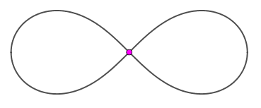
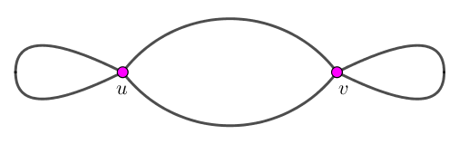
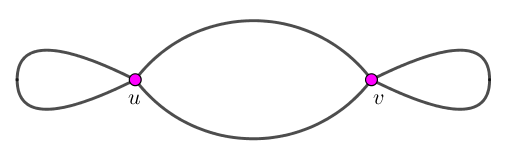

图的最大度 $\Delta \left( G \right) = 2$。
此时 $G$ 为圈图 $C_n$，不能表示成三个回路的并。
$\Delta \left( G \right) = 4$。
考虑 $4$ 度顶点的个数。
只有 $1$ 个 $4$ 度顶点。
容易证明，此时 $G$ 的拓扑形态一定类似下图：
此时显然无解。
有 $2$ 个 $4$ 度顶点。
设这两个顶点为 $u, v$，则 $G$ 有两种本质不同的拓扑形态：
 

容易看出，前者无解，后者有解。具体的判定可以通过下面方法来完成 (当然方法不唯一，下面只是一个例子)：
删去其中一个点 (比如 $v$) 及其关联的边，然后判定是否存在圈，如果存在圈，则为图 2，否则为图 1。
有超过 $3$ 个 $4$ 度顶点。
设其中三个顶点为 $u, v, w$。考虑 $G$ 的一个 Euler 回路，它一定经过 $u$ 两次，设 $u$ 将整个 Euler 回路拆成两个子回路 $C_1, C_2$。
此时，$v$ 也在 Euler 回路中出现两次。如果它同在 $C_1$ 中出现 (或同在 $C_2$ 中出现)，我们就可以通过 $v$ 将 $C_1$ 拆成两个回路，这样就有三个回路了。
同理，如果 $w$ 出现的两次在同一个子回路中，也是有解的。
否则，如果 $v, w$ 在 $C_1, C_2$ 中出现各一次，此时，$C_1, C_2$ 的拓扑形态如下：
$$ C_1 = u \overset{1} \leadsto v \overset{2} \leadsto w \overset{3} \leadsto u, C_2 = u \overset{4} \leadsto v \overset{5} \leadsto w \overset{6} \leadsto u $$
此时，我们可以构造如下三个回路：$D_1 = u \overset{1} \leadsto v \overset{4} \leadsto u, v \overset{2} \leadsto w \overset{5} \leadsto v, w \overset{3} \leadsto u \overset{6} \leadsto w$，即可完成任务。
$\Delta \left( G \right) \geq 6$。
设 $d \left( v \right) \geq 6$，考察 $G$ 的一个 Euler 回路，它一定经过 $v$ 至少三次。
于是我们将它拆成三段即可，每一段就是一个回路，从而一定有解。